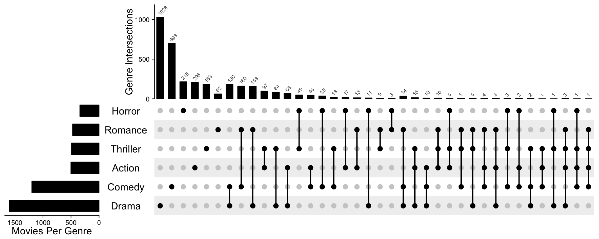
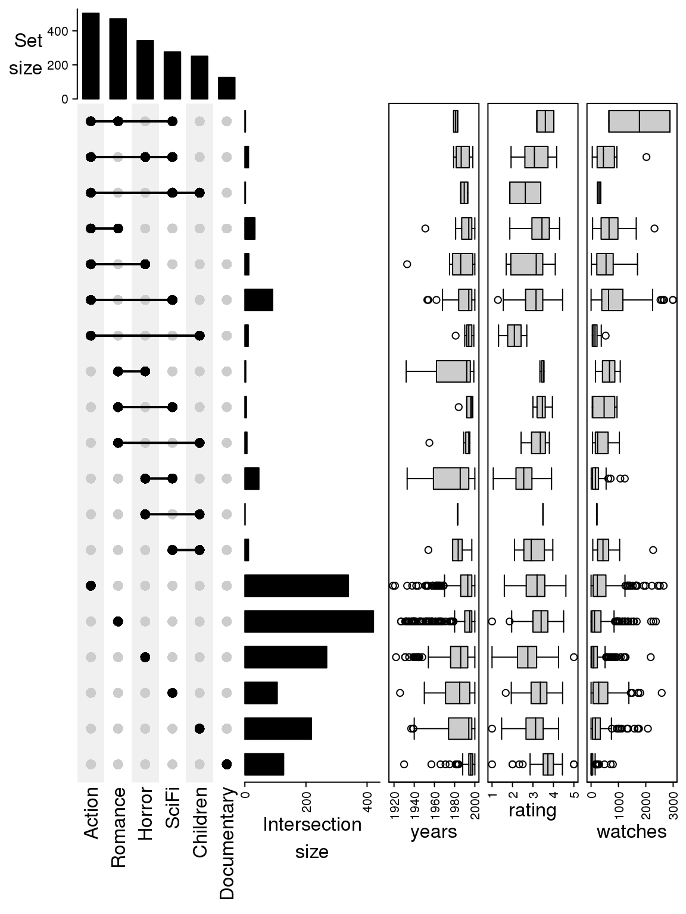

Chapter 8 UpSet plot
UpSet plot provides an efficient way to visualize intersections of multiple sets compared to the traditional approaches, i.e. the Venn Diagram. It is implemented in the UpSetR package in R. Here we re-implemented UpSet plots with the ComplexHeatmap package with some improvements.
8.1 Input data
To represent multiple sets, the variable can be represented as:
- A list of sets where each set is a vector, e.g.:
list(set1 = c("a", "b", "c"),
set2 = c("b", "c", "d", "e"),
...)- A binary matrix/data frame where rows are elements and columns are sets, e.g.:
set1 set2 set3
h 1 1 1
t 1 0 1
j 1 0 0
u 1 0 1
w 1 0 0
...In the matrix, e.g., for row t, it means, t is in set set1, not in set set2, and in set set3. Note the matrix is also valid if it is a logical matrix.
If the variable is a data frame, the binary columns (only contain 0 and 1) and the logical columns are only used.
Both formats can be used for making UpSet plots, users can still use list_to_matrix() to convert from list to the binary matrix.
lt = list(set1 = c("a", "b", "c"),
set2 = c("b", "c", "d", "e"))
list_to_matrix(lt)## set1 set2
## a 1 0
## b 1 1
## c 1 1
## d 0 1
## e 0 1You can also set the universal set in list_to_matrix():
list_to_matrix(lt, universal = letters[1:10])## set1 set2
## a 1 0
## b 1 1
## c 1 1
## d 0 1
## e 0 1
## f 0 0
## g 0 0
## h 0 0
## i 0 0
## j 0 0If the universal set does not completely cover the input sets, those elements are not in the universal set are removed:
list_to_matrix(lt, universal = letters[1:4])## set1 set2
## a 1 0
## b 1 1
## c 1 1
## d 0 1- The set can be genomic intervals, then it can only be represented as a list of
GRanges/IRangesobjects.
list(set1 = GRanges(...),
set2 = GRanges(...),
...)8.2 Mode
E.g. for three sets (A, B, C), all combinations of selecting elements in the set or not in the set are encoded as following:
A B C
1 1 1
1 1 0
1 0 1
0 1 1
1 0 0
0 1 0
0 0 1A value of 1 means to select that set and 0 means not to select that set. E.g., 1 1 0 means to select set A, B while not set C. Note there is no 0 0 0, because the background set is not of interest here. In following part of this section, we refer A, B and C as sets and each combination as combination set. The whole binary matrix is called combination matrix.
The UpSet plot visualizes the size of each combination set. With the binary code of each combination set, next we need to define how to calculate the size of that combination set. There are three modes:
distinctmode: 1 means in that set and 0 means not in that set, then1 1 0means a set of elements both in set A and B, while not in C (setdiff(intersect(A, B), C)). Under this mode, the seven combination sets are the seven partitions in the Venn diagram and they are mutually exclusive.intersectmode: 1 means in that set and 0 is not taken into account, then,1 1 0means a set of elements in set A and B, and they can also in C or not in C (intersect(A, B)). Under this mode, the seven combination sets can overlap.union mode: 1 means in that set and 0 is not taken into account. When there are multiple 1, the relationship is OR. Then,1 1 0means a set of elements in set A or B, and they can also in C or not in C (union(A, B)). Under this mode, the seven combination sets can overlap.
The three modes are illustrated in following figure:

8.3 Make the combination matrix
The function make_comb_mat() generates the combination matrix as well as calculates the size of the sets and the combination sets. The input can be one single variable or name-value pairs:
set.seed(123)
lt = list(a = sample(letters, 5),
b = sample(letters, 10),
c = sample(letters, 15))
m1 = make_comb_mat(lt)
m1## A combination matrix with 3 sets and 7 combinations.
## ranges of combination set size: c(1, 8).
## mode for the combination size: distinct.
## sets are on rows.
##
## Combination sets are:
## a b c code size
## x x x 111 2
## x x 110 1
## x x 101 1
## x x 011 4
## x 100 1
## x 010 3
## x 001 8
##
## Sets are:
## set size
## a 5
## b 10
## c 15m2 = make_comb_mat(a = lt$a, b = lt$b, c = lt$c)
m3 = make_comb_mat(list_to_matrix(lt))m1, m2 and m3 are identical.
The mode is controlled by the mode argument:
m1 = make_comb_mat(lt) # the default mode is `distinct`
m2 = make_comb_mat(lt, mode = "intersect")
m3 = make_comb_mat(lt, mode = "union")The UpSet plots under different modes will be demonstrated in later sections.
When there are too many sets, the sets can be pre-filtered by the set sizes. The min_set_size and top_n_sets are for this purpose. min_set_size controls the minimal size for the sets and top_n_sets controls the number of top sets with the largest sizes.
m1 = make_comb_mat(lt, min_set_size = 6)
m2 = make_comb_mat(lt, top_n_sets = 2)The subsetting of the sets affects the calculation of the sizes of the combination sets, that is why it needs to be controlled at the combination matrix generation step. The subsetting of combination sets can be directly performed by subsetting the matrix:
m = make_comb_mat(lt)
m[1:4]## A combination matrix with 3 sets and 4 combinations.
## ranges of combination set size: c(1, 4).
## mode for the combination size: distinct.
## sets are on rows.
##
## Combination sets are:
## a b c code size
## x x x 111 2
## x x 110 1
## x x 101 1
## x x 011 4
##
## Sets are:
## set size
## a 5
## b 10
## c 15make_comb_mat() also allows to specify the universal set so that the complement set which contains elements not belonging to any set is also considered.
m = make_comb_mat(lt, universal_set = letters)
m## A combination matrix with 3 sets and 8 combinations.
## ranges of combination set size: c(1, 8).
## mode for the combination size: distinct.
## sets are on rows.
##
## Combination sets are:
## a b c code size
## x x x 111 2
## x x 110 1
## x x 101 1
## x x 011 4
## x 100 1
## x 010 3
## x 001 8
## 000 6
##
## Sets are:
## set size
## a 5
## b 10
## c 15
## complement 6The universal set can be smaller than the union of all sets, then for each set, only the intersection to universal set is considered.
m = make_comb_mat(lt, universal_set = letters[1:10])
m## A combination matrix with 3 sets and 5 combinations.
## ranges of combination set size: c(1, 3).
## mode for the combination size: distinct.
## sets are on rows.
##
## Combination sets are:
## a b c code size
## x x 110 1
## x x 101 1
## x x 011 2
## x 001 3
## 000 3
##
## Sets are:
## set size
## a 2
## b 3
## c 6
## complement 3If you already know the size of the complement size, you can directly set complement_size argument.
m = make_comb_mat(lt, complement_size = 5)
m## A combination matrix with 3 sets and 8 combinations.
## ranges of combination set size: c(1, 8).
## mode for the combination size: distinct.
## sets are on rows.
##
## Combination sets are:
## a b c code size
## x x x 111 2
## x x 110 1
## x x 101 1
## x x 011 4
## x 100 1
## x 010 3
## x 001 8
## 000 5
##
## Sets are:
## set size
## a 5
## b 10
## c 15
## complement 5When the input is matrix and it contains elements that do not belong to any of the set, these elements are treated as complement set.
x = list_to_matrix(lt, universal_set = letters)
m = make_comb_mat(x)
m## A combination matrix with 3 sets and 8 combinations.
## ranges of combination set size: c(1, 8).
## mode for the combination size: distinct.
## sets are on rows.
##
## Combination sets are:
## a b c code size
## x x x 111 2
## x x 110 1
## x x 101 1
## x x 011 4
## x 100 1
## x 010 3
## x 001 8
## 000 6
##
## Sets are:
## set size
## a 5
## b 10
## c 15
## complement 6Next we demonstrate a second example, where the sets are genomic regions. When the sets are genomic regions, the size is calculated as the sum of the width of regions in each set (or in other words, the total number of base pairs).
library(circlize)
library(GenomicRanges)
lt2 = lapply(1:4, function(i) generateRandomBed())
lt2 = lapply(lt2, function(df) GRanges(seqnames = df[, 1],
ranges = IRanges(df[, 2], df[, 3])))
names(lt2) = letters[1:4]
m2 = make_comb_mat(lt2)
m2## A combination matrix with 4 sets and 15 combinations.
## ranges of combination set size: c(184941701, 199900416).
## mode for the combination size: distinct.
## sets are on rows.
##
## Top 8 combination sets are:
## a b c d code size
## x x 0011 199900416
## x 1000 199756519
## x x x 1011 198735008
## x x x x 1111 197341532
## x x x 1110 197137160
## x x x 1101 194569926
## x x 1001 194462988
## x x 1010 192670258
##
## Sets are:
## set size
## a 1566783009
## b 1535968265
## c 1560549760
## d 1552480645We don’t recommend to use the number of regions for the intersection of two sets of genomic regions. There are two reasons: 1. the value is not symmetric, i.e. the number of intersected regions measured in set1 is not always identical to the number of intersected regions measured in set2, thus, it is difficult to assign a value for the intersection between set1 and set2; 2. if one long region in set1 overlaps to another long region in set2, but only in a few base pairs, does it make sense to say these two regions are common in the two sets?
The universal set also works for sets as genomic regions.
8.4 Utility functions
make_comb_mat() returns a matrix, also in comb_mat class. There are some utility functions that can be applied to this comb_mat object:
set_name(): The set names.comb_name(): The combination set names. The names of the combination sets are formatted as a string of binary bits. E.g. for three sets of A, B, C, the combination set with name “101” corresponds to selecting set A, not selecting set B and selecting set C.set_size(): The set sizes.comb_size(): The combination set sizes.comb_degree(): The degree for a combination set is the number of sets that are selected.t(): Transpose the combination matrix. By defaultmake_comb_mat()generates a matrix where sets are on rows and combination sets are on columns, and so are they on the UpSet plots. By transposing the combination matrix, the position of sets and combination sets can be swtiched on the UpSet plot.extract_comb(): Extract the elements in a specified combination set. The usage will be explained later.- Functions for subsetting the matrix.
Quick examples are:
m = make_comb_mat(lt)
set_name(m)## [1] "a" "b" "c"comb_name(m)## [1] "111" "110" "101" "011" "100" "010" "001"set_size(m)## a b c
## 5 10 15comb_size(m)## 111 110 101 011 100 010 001
## 2 1 1 4 1 3 8comb_degree(m)## 111 110 101 011 100 010 001
## 3 2 2 2 1 1 1t(m)## A combination matrix with 3 sets and 7 combinations.
## ranges of combination set size: c(1, 8).
## mode for the combination size: distinct.
## sets are on columns
##
## Combination sets are:
## a b c code size
## x x x 111 2
## x x 110 1
## x x 101 1
## x x 011 4
## x 100 1
## x 010 3
## x 001 8
##
## Sets are:
## set size
## a 5
## b 10
## c 15For using extract_comb(), the valid combination set name should be from comb_name(). Note the elements in the combination sets depends on the “mode” set in make_comb_mat().
extract_comb(m, "101")## [1] "j"And the example for sets that are the genomic regions:
# `lt2` was generated in the previous section
m2 = make_comb_mat(lt2)
set_size(m2)## a b c d
## 1566783009 1535968265 1560549760 1552480645comb_size(m2)## 1111 1110 1101 1011 0111 1100 1010 1001
## 197341532 197137160 194569926 198735008 191312455 192109618 192670258 194462988
## 0110 0101 0011 1000 0100 0010 0001
## 191359036 184941701 199900416 199756519 187196837 192093895 191216619And now extract_comb() returns genomic regions that are in the corresponding combination set.
extract_comb(m2, "1010")## GRanges object with 5063 ranges and 0 metadata columns:
## seqnames ranges strand
## <Rle> <IRanges> <Rle>
## [1] chr1 255644-258083 *
## [2] chr1 306114-308971 *
## [3] chr1 1267493-1360170 *
## [4] chr1 2661311-2665736 *
## [5] chr1 3020553-3030645 *
## ... ... ... ...
## [5059] chrY 56286079-56286864 *
## [5060] chrY 57049541-57078332 *
## [5061] chrY 58691055-58699756 *
## [5062] chrY 58705675-58716954 *
## [5063] chrY 58765097-58776696 *
## -------
## seqinfo: 24 sequences from an unspecified genome; no seqlengthsWith comb_size() and comb_degree(), we can filter the combination matrix as:
m = make_comb_mat(lt)
# combination set size >= 4
m[comb_size(m) >= 4]## A combination matrix with 3 sets and 2 combinations.
## ranges of combination set size: c(4, 8).
## mode for the combination size: distinct.
## sets are on rows.
##
## Combination sets are:
## a b c code size
## x x 011 4
## x 001 8
##
## Sets are:
## set size
## a 5
## b 10
## c 15# combination set degree == 2
m[comb_degree(m) == 2]## A combination matrix with 3 sets and 3 combinations.
## ranges of combination set size: c(1, 4).
## mode for the combination size: distinct.
## sets are on rows.
##
## Combination sets are:
## a b c code size
## x x 110 1
## x x 101 1
## x x 011 4
##
## Sets are:
## set size
## a 5
## b 10
## c 15For the complement set, the name for this special combination set is only composed of zeros.
m2 = make_comb_mat(lt, universal_set = letters)
comb_name(m2) # see the first element## [1] "111" "110" "101" "011" "100" "010" "001" "000"comb_degree(m2)## 111 110 101 011 100 010 001 000
## 3 2 2 2 1 1 1 0If universal_set was set in make_comb_mat(), extract_comb() can be applied to the complement set.
m2 = make_comb_mat(lt, universal_set = letters)
extract_comb(m2, "000")## [1] "a" "b" "f" "p" "u" "z"m2 = make_comb_mat(lt, universal_set = letters[1:10])
extract_comb(m2, "000")## [1] "a" "b" "f"When universal_set was set, extract_comb() also works for genomic region sets.
In previous examples, we demonstrated using “one-dimensional index” such as:
m[comb_degree(m) == 2]Since the combination matrix is natually a matrix, the indices can also be applied to the both dimensions. In the default settings, sets are on the rows and combination sets are on the columns, thus, indices on the first dimension of the matrix correspond to sets and indices on the second dimension correspond to combination sets:
# by set names
m[c("a", "b", "c"), ]
# by nummeric indicies
m[3:1, ]New empty sets can be added to the combination matrix by:
# `d` is the new empty set
m[c("a", "b", "c", "d"), ]Note when the indices specified do not cover all non-empty sets in the original combination matrix, the combination matrix will be re-calculated because it affects the values in the combination sets:
# if `c` is a non-empty set
m[c("a", "b"),]Similar for subsetting on the second dimension which correspond to the combination sets:
# reorder
m[, 5:1]
# take a subset
m[, 1:3]
# by charater indices
m[, c("110", "101", "011")]New empty combination sets can also be added by setting the character indices:
m[m, c(comb_name(m), "100")]Indices can be set on both dimension simultaneously only when the set indices covers all non-empty sets:
m[3:1, 5:1]
# this will throw an error because `c` is a non-empty set
m[c("a", "b"), 5:1]If the combination matrix was transposed, the margin of the matrix where set indices and combination set indices should be switched.
tm = t(m)
tm[reverse(comb_name(tm)), reverse(set_name(tm))]If only the indices for the combination sets are set as one-dimensional, it automatically works for both matrices that are transposed or not:
m[1:5]
tm[1:5]8.5 Make the plot
Making the UpSet plot is very straightforward that users just send the combination matrix to UpSet() function:
m = make_comb_mat(lt)
UpSet(m)
By default the sets are ordered by the size and the combination sets are ordered by the degree (number of sets that are selected).
The order is controlled by set_order and comb_order:
UpSet(m, set_order = c("a", "b", "c"), comb_order = order(comb_size(m)))
Color of dots, size of dots and line width of the segments are controlled by pt_size, comb_col and lwd. comb_col should be a vector corresponding to the combination sets. In following code, since comb_degree(m) returns a vector of integers, we just use it as index for the color vector.
UpSet(m, pt_size = unit(5, "mm"), lwd = 3,
comb_col = c("red", "blue", "black")[comb_degree(m)])
Colors for the background (the rectangles and the dots representing the set is not selected) are controlled by bg_col, bg_pt_col. The length of bg_col can have length of one or two.
UpSet(m, comb_col = "#0000FF", bg_col = "#F0F0FF", bg_pt_col = "#CCCCFF")
UpSet(m, comb_col = "#0000FF", bg_col = c("#F0F0FF", "#FFF0F0"), bg_pt_col = "#CCCCFF")
Transposing the combination matrix swtiches the sets to columns and combination sets to rows.
UpSet(t(m))
As we have introduced, if do subsetting on the combination sets, the subset of the matrix can be visualized as well:
UpSet(m[comb_size(m) >= 4])
UpSet(m[comb_degree(m) == 2])
Following compares the different mode in make_comb_mat():
m1 = make_comb_mat(lt) # the default mode is `distinct`
m2 = make_comb_mat(lt, mode = "intersect")
m3 = make_comb_mat(lt, mode = "union")
UpSet(m1)
UpSet(m2)
UpSet(m3)
For the plot containing complement set, there is one additional column showing this complement set does not overlap to any of the sets (all dots are in grey).
m2 = make_comb_mat(lt, universal_set = letters)
UpSet(m2)
Remember if you already know the size for the complement set, you can directly assign it by complement_size argument in make_comb_mat().
m2 = make_comb_mat(lt, complement_size = 10)
UpSet(m2)
For the case where the universal set is smaller than the union of all sets:
m2 = make_comb_mat(lt, universal_set = letters[1:10])
UpSet(m2)
There are some cases that you may have complement set but you don’t want to show it, especially when the input for make_comb_mat() is a matrix which already contains complement set, you can filter by the combination degrees.
x = list_to_matrix(lt, universal_set = letters)
m2 = make_comb_mat(x)
m2 = m2[comb_degree(m2) > 0]
UpSet(m2)
8.6 UpSet plots as heatmaps
In the UpSet plot, the major component is the combination matrix, and on the two sides are the barplots representing the size of sets and the combination sets, thus, it is quite straightforward to implement it as a “heatmap” where the heatmap is self-defined with dots and segments, and the two barplots are two barplot annotations constructed by anno_barplot().
The default top annotation is:
HeatmapAnnotation("Intersection\nsize" = anno_barplot(comb_size(m),
border = FALSE, gp = gpar(fill = "black"), height = unit(3, "cm")),
annotation_name_side = "left", annotation_name_rot = 0)This top annotation is wrapped in upset_top_annotation() which only contais the upset top barplot annotation. Most of the arguments in upset_top_annotation() directly go to the anno_barplot(), e.g. to set the colors of bars:
UpSet(m, top_annotation = upset_top_annotation(m,
gp = gpar(col = comb_degree(m))))
To control the data range and axis:
UpSet(m, top_annotation = upset_top_annotation(m,
ylim = c(0, 15),
bar_width = 1,
axis_param = list(side = "right", at = c(0, 5, 10, 15),
labels = c("zero", "five", "ten", "fifteen"))))
To control the annotation name:
UpSet(m, top_annotation = upset_top_annotation(m,
annotation_name_rot = 90,
annotation_name_side = "right",
axis_param = list(side = "right")))
The settings are very similar for the right annotation:
UpSet(m, right_annotation = upset_right_annotation(m,
ylim = c(0, 30),
gp = gpar(fill = "green"),
annotation_name_side = "top",
axis_param = list(side = "top")))
upset_top_annotation() and upset_right_annotation() can automatically recognize whether sets are on rows or columns.
upset_top_annotation() and upset_right_annotation() only contain one barplot annotation. If users want to add more annotations, they need to manually construct a HeatmapAnnotation object with multiple annotations.
To add more annotations on top:
UpSet(m, top_annotation = HeatmapAnnotation(
degree = as.character(comb_degree(m)),
"Intersection\nsize" = anno_barplot(comb_size(m),
border = FALSE,
gp = gpar(fill = "black"),
height = unit(2, "cm")
),
annotation_name_side = "left",
annotation_name_rot = 0))
To add more annotation on the right:
UpSet(m, right_annotation = rowAnnotation(
"Set size" = anno_barplot(set_size(m),
border = FALSE,
gp = gpar(fill = "black"),
width = unit(2, "cm")
),
group = c("group1", "group1", "group2")))
To move the right annotation to the left of the combination matrix:
UpSet(m, left_annotation = rowAnnotation(
"Set size" = anno_barplot(set_size(m),
border = FALSE,
gp = gpar(fill = "black"),
width = unit(2, "cm")
)), right_annotation = NULL)
To reverse the axis of the left annotation:
UpSet(m, left_annotation = rowAnnotation(
"Set size" = anno_barplot(set_size(m),
axis_param = list(direction = "reverse"),
border = FALSE,
gp = gpar(fill = "black"),
width = unit(2, "cm")
)), right_annotation = NULL,
row_names_side = "right")
The object returned by UpSet() is actually a Heatmap class object, thus, you can add to other heatmaps and annotations by + or %v%.
ht = UpSet(m)
class(ht)## [1] "Heatmap"
## attr(,"package")
## [1] "ComplexHeatmap"ht + Heatmap(1:3, name = "foo", width = unit(5, "mm")) +
rowAnnotation(bar = anno_points(1:3))
ht %v% Heatmap(rbind(1:7), name = "foo", row_names_side = "left",
height = unit(5, "mm")) %v%
HeatmapAnnotation(bar = anno_points(1:7),
annotation_name_side = "left")
Add multiple UpSet plots:
m1 = make_comb_mat(lt, mode = "distinct")
m2 = make_comb_mat(lt, mode = "intersect")
m3 = make_comb_mat(lt, mode = "union")
UpSet(m1, row_title = "distinct mode") %v%
UpSet(m2, row_title = "intersect mode") %v%
UpSet(m3, row_title = "union mode")
Or first transpose all the combination matrices and add them horizontally:
m1 = make_comb_mat(lt, mode = "distinct")
m2 = make_comb_mat(lt, mode = "intersect")
m3 = make_comb_mat(lt, mode = "union")
UpSet(t(m1), column_title = "distinct mode") +
UpSet(t(m2), column_title = "intersect mode") +
UpSet(t(m3), column_title = "union mode")
The three combination matrices are actually the same and plotting them three times is redundant. With the functionality in ComplexHeatmap package, we can directly add three barplot annotations.
top_ha = HeatmapAnnotation(
"distict" = anno_barplot(comb_size(m1),
gp = gpar(fill = "black"), height = unit(2, "cm")),
"intersect" = anno_barplot(comb_size(m2),
gp = gpar(fill = "black"), height = unit(2, "cm")),
"union" = anno_barplot(comb_size(m3),
gp = gpar(fill = "black"), height = unit(2, "cm")),
gap = unit(2, "mm"), annotation_name_side = "left", annotation_name_rot = 0)
# the same for using m2 or m3
UpSet(m1, top_annotation = top_ha)
Similar when the combination matrix is transposed:
right_ha = rowAnnotation(
"distict" = anno_barplot(comb_size(m1),
gp = gpar(fill = "black"), width = unit(2, "cm")),
"intersect" = anno_barplot(comb_size(m2),
gp = gpar(fill = "black"), width = unit(2, "cm")),
"union" = anno_barplot(comb_size(m3),
gp = gpar(fill = "black"), width = unit(2, "cm")),
gap = unit(2, "mm"), annotation_name_side = "bottom")
# the same for using m2 or m3
UpSet(t(m1), right_annotation = right_ha)
In the origial UpSet implementation, the combination set sizes are also drawn on top of the barplots. Here, we don’t directly support it, but the sizes can be manually added by decorate_annotation() function. See following example:
ht = draw(UpSet(m))
od = column_order(ht)
cs = comb_size(m)
decorate_annotation("Intersection\nsize", {
grid.text(cs[od], x = seq_along(cs), y = unit(cs[od], "native") + unit(2, "pt"),
default.units = "native", just = "bottom", gp = gpar(fontsize = 8))
})There are several reasons that we don’t directly supported add the combination set size to the plot: 1. Add new text means to add several new arguments to the function, e.g., the arguments for graphic parameters, the rotations, the positions, the margin to the bars, which will make the function heavy. 2. Need to properly calculate the ylim for the barplot annotation to let the text not exceed the annotation region. 3. Using decoration_annotation() is more flexible to use that not only the size but also customized text can be added.
8.7 Example with the movies dataset
UpsetR package also provides a movies dataset, which contains 17 genres for 3883 movies. First load the dataset.
movies = read.csv(system.file("extdata", "movies.csv", package = "UpSetR"),
header = TRUE, sep = ";")
head(movies) # `make_comb_mat()` automatically ignores the first two columns## Name ReleaseDate Action Adventure Children
## 1 Toy Story (1995) 1995 0 0 1
## 2 Jumanji (1995) 1995 0 1 1
## 3 Grumpier Old Men (1995) 1995 0 0 0
## 4 Waiting to Exhale (1995) 1995 0 0 0
## 5 Father of the Bride Part II (1995) 1995 0 0 0
## 6 Heat (1995) 1995 1 0 0
## Comedy Crime Documentary Drama Fantasy Noir Horror Musical Mystery Romance
## 1 1 0 0 0 0 0 0 0 0 0
## 2 0 0 0 0 1 0 0 0 0 0
## 3 1 0 0 0 0 0 0 0 0 1
## 4 1 0 0 1 0 0 0 0 0 0
## 5 1 0 0 0 0 0 0 0 0 0
## 6 0 1 0 0 0 0 0 0 0 0
## SciFi Thriller War Western AvgRating Watches
## 1 0 0 0 0 4.15 2077
## 2 0 0 0 0 3.20 701
## 3 0 0 0 0 3.02 478
## 4 0 0 0 0 2.73 170
## 5 0 0 0 0 3.01 296
## 6 0 1 0 0 3.88 940To make a same UpSet plot as in this vignette:
m = make_comb_mat(movies, top_n_sets = 6)
m## A combination matrix with 6 sets and 39 combinations.
## ranges of combination set size: c(1, 1028).
## mode for the combination size: distinct.
## sets are on rows.
##
## Top 8 combination sets are:
## Action Comedy Drama Horror Romance Thriller code size
## x 001000 1028
## x 010000 698
## x 000100 216
## x 100000 206
## x 000001 183
## x x 011000 180
## x x 010010 160
## x x 001010 158
##
## Sets are:
## set size
## Action 503
## Comedy 1200
## Drama 1603
## Horror 343
## Romance 471
## Thriller 492
## complement 2m = m[comb_degree(m) > 0]
UpSet(m)
Following code makes it look more similar as the orignal plot. The code is a little bit long, but most of the code mainly customize the annotations and row/column orders.
ss = set_size(m)
cs = comb_size(m)
ht = UpSet(m,
set_order = order(ss),
comb_order = order(comb_degree(m), -cs),
top_annotation = HeatmapAnnotation(
"Genre Intersections" = anno_barplot(cs,
ylim = c(0, max(cs)*1.1),
border = FALSE,
gp = gpar(fill = "black"),
height = unit(4, "cm")
),
annotation_name_side = "left",
annotation_name_rot = 90),
left_annotation = rowAnnotation(
"Movies Per Genre" = anno_barplot(-ss,
baseline = 0,
axis_param = list(
at = c(0, -500, -1000, -1500),
labels = c(0, 500, 1000, 1500),
labels_rot = 0),
border = FALSE,
gp = gpar(fill = "black"),
width = unit(4, "cm")
),
set_name = anno_text(set_name(m),
location = 0.5,
just = "center",
width = max_text_width(set_name(m)) + unit(4, "mm"))
),
right_annotation = NULL,
show_row_names = FALSE)
ht = draw(ht)
od = column_order(ht)
decorate_annotation("Genre Intersections", {
grid.text(cs[od], x = seq_along(cs), y = unit(cs[od], "native") + unit(2, "pt"),
default.units = "native", just = c("left", "bottom"),
gp = gpar(fontsize = 6, col = "#404040"), rot = 45)
})
In movies dataset, there is also one column AvgRating which gives the rating of each movie, we next split all the movies into five groups based on the ratings.
genre = c("Action", "Romance", "Horror", "Children", "SciFi", "Documentary")
rating = cut(movies$AvgRating, c(0, 1, 2, 3, 4, 5))
m_list = tapply(seq_len(nrow(movies)), rating, function(ind) {
m = make_comb_mat(movies[ind, genre, drop = FALSE])
m[comb_degree(m) > 0]
})The combination matrices in m_list might have different combination sets:
sapply(m_list, comb_size)## $`(0,1]`
## 010000 001000 000100 000001
## 1 2 1 1
##
## $`(1,2]`
## 101010 100110 110000 101000 100100 100010 001010 100000 010000 001000 000100
## 1 1 1 4 5 5 8 14 7 38 14
## 000010 000001
## 3 2
##
## $`(2,3]`
## 101010 110000 101000 100100 100010 010100 010010 001010 000110 100000 010000
## 4 8 2 6 35 3 1 27 7 126 99
## 001000 000100 000010 000001
## 142 77 27 9
##
## $`(3,4]`
## 110010 101010 100110 110000 101000 100010 011000 010100 010010 001100 001010
## 1 6 1 20 6 45 3 4 4 1 11
## 000110 100000 010000 001000 000100 000010 000001
## 5 176 276 82 122 66 87
##
## $`(4,5]`
## 110010 101010 110000 101000 100010 100000 010000 001000 000100 000010 000001
## 1 1 4 1 6 23 38 4 4 10 28To compare between multiple groups with UpSet plots, we need to normalize all the matrices to make them have same sets and same combination sets. normalize_comb_mat() basically adds zero to the new combination sets which were not there before.
m_list = normalize_comb_mat(m_list)
sapply(m_list, comb_size)## (0,1] (1,2] (2,3] (3,4] (4,5]
## 110001 0 1 0 1 0
## 100101 0 1 4 6 1
## 100011 0 0 0 1 1
## 110000 0 5 6 0 0
## 100100 0 4 2 6 1
## 100010 0 1 8 20 4
## 100001 0 5 35 45 6
## 010100 0 0 0 1 0
## 010010 0 0 3 4 0
## 010001 0 0 7 5 0
## 000110 0 0 0 3 0
## 000101 0 8 27 11 0
## 000011 0 0 1 4 0
## 100000 0 14 126 176 23
## 010000 1 14 77 122 4
## 001000 1 2 9 87 28
## 000100 2 38 142 82 4
## 000010 1 7 99 276 38
## 000001 0 3 27 66 10We calculate the range for the two barplots:
max_set_size = max(sapply(m_list, set_size))
max_comb_size = max(sapply(m_list, comb_size))And finally we add the five UpSet plots vertically:
ht_list = NULL
for(i in seq_along(m_list)) {
ht_list = ht_list %v%
UpSet(m_list[[i]], row_title = paste0("rating in", names(m_list)[i]),
set_order = NULL, comb_order = NULL,
top_annotation = upset_top_annotation(m_list[[i]], ylim = c(0, max_comb_size)),
right_annotation = upset_right_annotation(m_list[[i]], ylim = c(0, max_set_size)))
}
ht_list
After comparing the five UpSet plots, we can see most of the movies are rated between 2 and 4. Horror movies tend to have lower ratings and romance movies tend to have higher ratings.
Instead of directly comparing the size of the combination sets, we can also compare the relative fraction to the full sets. In following code, we remove the group of c(0, 1] because the number of movies are too few there.
m_list = m_list[-1]
max_set_size = max(sapply(m_list, set_size))
rel_comb_size = sapply(m_list, function(m) {
s = comb_size(m)
# because the combination matrix is generated under "distinct" mode
# the sum of `s` is the size of the full set
s/sum(s)
})
ht_list = NULL
for(i in seq_along(m_list)) {
ht_list = ht_list %v%
UpSet(m_list[[i]], row_title = paste0("rating in", names(m_list)[i]),
set_order = NULL, comb_order = NULL,
top_annotation = HeatmapAnnotation(
"Relative\nfraction" = anno_barplot(
rel_comb_size[, i],
ylim = c(0, 0.5),
gp = gpar(fill = "black"),
border = FALSE,
height = unit(2, "cm"),
),
annotation_name_side = "left",
annotation_name_rot = 0),
right_annotation = upset_right_annotation(m_list[[i]],
ylim = c(0, max_set_size))
)
}
ht_list
Now the trend is more clear that horror movies are rated low and documentaries are rated high.
Next we split the movies by years:
year = floor(movies$ReleaseDate/10)*10
m_list = tapply(seq_len(nrow(movies)), year, function(ind) {
m = make_comb_mat(movies[ind, genre, drop = FALSE])
m[comb_degree(m) > 0]
})
m_list = normalize_comb_mat(m_list)
max_set_size = max(sapply(m_list, set_size))
max_comb_size = max(sapply(m_list, comb_size))
ht_list1 = NULL
for(i in 1:5) {
ht_list1 = ht_list1 %v%
UpSet(m_list[[i]], row_title = paste0(names(m_list)[i], "s"),
set_order = NULL, comb_order = NULL,
top_annotation = upset_top_annotation(m_list[[i]], ylim = c(0, max_comb_size),
height = unit(2, "cm")),
right_annotation = upset_right_annotation(m_list[[i]], ylim = c(0, max_set_size)))
}
ht_list2 = NULL
for(i in 6:10) {
ht_list2 = ht_list2 %v%
UpSet(m_list[[i]], row_title = paste0(names(m_list)[i], "s"),
set_order = NULL, comb_order = NULL,
top_annotation = upset_top_annotation(m_list[[i]], ylim = c(0, max_comb_size),
height = unit(2, "cm")),
right_annotation = upset_right_annotation(m_list[[i]], ylim = c(0, max_set_size)))
}
grid.newpage()
pushViewport(viewport(x = 0, width = 0.5, just = "left"))
draw(ht_list1, newpage = FALSE)
popViewport()
pushViewport(viewport(x = 0.5, width = 0.5, just = "left"))
draw(ht_list2, newpage = FALSE)
popViewport()
Now we can see most of the movies were produces in 1990s and the two major genres are actions and romance.
Similarly, if we change the top annotation to the relative fraction to the full sets (code not shown):

Finally we can add the statistics of years, ratings and number of watches for each combination set as boxplot annotations to the right of the UpSet plot.
m = make_comb_mat(movies[, genre])
m = m[comb_degree(m) > 0]
comb_elements = lapply(comb_name(m), function(nm) extract_comb(m, nm))
years = lapply(comb_elements, function(ind) movies$ReleaseDate[ind])
rating = lapply(comb_elements, function(ind) movies$AvgRating[ind])
watches = lapply(comb_elements, function(ind) movies$Watches[ind])
UpSet(t(m)) + rowAnnotation(years = anno_boxplot(years),
rating = anno_boxplot(rating),
watches = anno_boxplot(watches),
gap = unit(2, "mm"))
We can see the movies with genre “Scifi + Children” were produced quite old but the ratings are not bad. The movies with genre “Action + Children” have the lowest ratings.
8.8 Example with the genomic regions
The H3K4me3 ChIP-seq peaks from six Roadmap samples are visualized by UpSet plot. The six samples are:
First read the files and convert to GRanges objects.
file_list = c(
"ESC" = "data/E016-H3K4me3.narrowPeak.gz",
"ES-deriv1" = "data/E004-H3K4me3.narrowPeak.gz",
"ES-deriv2" = "data/E006-H3K4me3.narrowPeak.gz",
"Brain" = "data/E071-H3K4me3.narrowPeak.gz",
"Muscle" = "data/E100-H3K4me3.narrowPeak.gz",
"Heart" = "data/E104-H3K4me3.narrowPeak.gz"
)
library(GenomicRanges)
peak_list = lapply(file_list, function(f) {
df = read.table(f)
GRanges(seqnames = df[, 1], ranges = IRanges(df[, 2], df [, 3]))
})Make the combination matrix. Note now the size of the sets and the combination sets are total base pairs or the sum of width of the regions. We only keep the combination sets with more than 500kb.
m = make_comb_mat(peak_list)
m = m[comb_size(m) > 500000]
UpSet(m)
We can nicely format the axis labels by setting axis_param:
UpSet(m,
top_annotation = upset_top_annotation(
m,
axis_param = list(at = c(0, 1e7, 2e7),
labels = c("0MB", "10MB", "20MB")),
height = unit(4, "cm")
),
right_annotation = upset_right_annotation(
m,
axis_param = list(at = c(0, 2e7, 4e7, 6e7),
labels = c("0MB", "20MB", "40MB", "60MB"),
labels_rot = 0),
width = unit(4, "cm")
))
With each set of genomic regions, we can associate more information to it, such as the mean methylation or the distance to nearest TSS.
subgroup = c("ESC" = "group1",
"ES-deriv1" = "group1",
"ES-deriv2" = "group1",
"Brain" = "group2",
"Muscle" = "group2",
"Heart" = "group2"
)
comb_sets = lapply(comb_name(m), function(nm) extract_comb(m, nm))
comb_sets = lapply(comb_sets, function(gr) {
# we just randomly generate dist_to_tss and mean_meth
gr$dist_to_tss = abs(rnorm(length(gr), mean = runif(1, min = 500, max = 2000), sd = 1000))
gr$mean_meth = abs(rnorm(length(gr), mean = 0.1, sd = 0.1))
gr
})
UpSet(m,
top_annotation = upset_top_annotation(
m,
axis_param = list(at = c(0, 1e7, 2e7),
labels = c("0MB", "10MB", "20MB")),
height = unit(4, "cm")
),
right_annotation = upset_right_annotation(
m,
axis_param = list(at = c(0, 2e7, 4e7, 6e7),
labels = c("0MB", "20MB", "40MB", "60MB"),
labels_rot = 0),
width = unit(4, "cm")
),
left_annotation = rowAnnotation(group = subgroup[set_name(m)], show_annotation_name = FALSE),
bottom_annotation = HeatmapAnnotation(
dist_to_tss = anno_boxplot(lapply(comb_sets, function(gr) gr$dist_to_tss), outline = FALSE),
mean_meth = sapply(comb_sets, function(gr) mean(gr$mean_meth)),
annotation_name_side = "left"
)
)